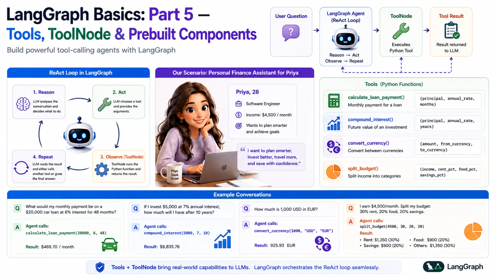
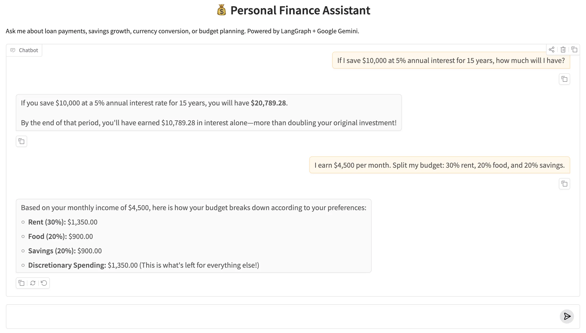

LangGraph Basics: Part 5 — Tools, ToolNode & Prebuilt Components

📚 Table of Contents
- 1. Why LLMs Need External Tools
- 2. Installation & Setup
- 3. Three Ways to Define Tools
- 3.1 Method 1: @tool Decorator
- 3.2 Method 2: StructuredTool
- 3.3 Method 3: BaseTool Subclass
- 3.4 The Finance Tools
- 4. ToolNode — The Prebuilt Executor
- 5. Binding Tools to the LLM
- 6. Routing with tools_condition
- 7. Complete Example: Finance Assistant
- 7.1 Scenario & Architecture
- 7.2 State Design
- 7.3 Tools (tools/ package)
- 7.4 Agent Node (nodes.py)
- 7.5 Graph Assembly (graph.py)
- 7.6 Runner & Console Output
- 7.7 Graph Diagram
- 8. Using create_react_agent
- 9. Web Interface
- 10. Conclusion
🧠 1. Why LLMs Need External Tools
Language models are surprisingly good at many things — explaining concepts, summarising text, writing code, answering questions. But ask one to calculate the monthly payment on a $20,000 car loan and you might get an answer that sounds right but is quietly off by a few dollars. That might seem harmless, but small calculation errors in finance compound into real problems over a 4-year loan.
This happens because LLMs don't actually compute — they predict text. When an LLM "does math", it's pattern-matching against millions of similar problems it saw during training. Most of the time it's close enough. But close enough isn't acceptable when your users are making financial decisions.
The solution is tools. A tool in LangGraph is simply a Python function that the LLM can call when it needs one. The LLM handles the part it's genuinely good at — understanding the question, reasoning about which function to use, and explaining the result in plain language. Python handles the part it's good at: exact arithmetic. Together, they're far more reliable than either alone.
🔗 What is a Tool? In LangGraph and LangChain, a tool is a Python callable wrapped as a structured object with a name, a description, and a parameter schema — everything the LLM needs to decide when to call it and what arguments to pass. There are three ways to create one: the @tool decorator, StructuredTool.from_function(), or subclassing BaseTool. Section 3 covers all three.
🔄 The ReAct Loop
The pattern that governs tool-calling agents is called ReAct — short for Reason + Act. It describes a loop the agent runs until it has a final answer:
- Reason — the LLM reads the conversation and decides what to do next. If it has enough information to answer, it does. If not, it picks a tool.
- Act — the LLM calls the chosen tool with specific arguments (it doesn't execute the code itself — it just requests the call).
- Observe — LangGraph's ToolNode runs the Python function and hands the result back to the LLM.
- Repeat — the LLM reads the tool result and either calls another tool or gives a final answer.
Think of a good chef in a professional kitchen. They read the order (Reason), grab the right knife or pan (Act), taste the dish (Observe), then adjust the seasoning (Reason again). They don't do everything with their bare hands — they use the right tool at each step. A LangGraph tool-calling agent works exactly the same way.
| Step | Who does it | What happens |
|---|---|---|
| Reason | LLM (agent node) | Reads the conversation, decides to use calculate_loan_payment |
| Act | LLM → AIMessage | Returns tool_calls with function name and arguments |
| Observe | ToolNode | Runs the Python function, wraps result in ToolMessage |
| Reason again | LLM (agent node) | Reads tool result, writes final answer as plain text |
💰 Our Scenario: Personal Finance Assistant
Throughout this post, we'll build a Personal Finance Assistant for Priya — a 28-year-old software engineer who earns $4,500 per month. Priya wants to plan smarter: she's thinking about a car loan, she'd like to start investing, she's about to travel to Europe, and she wants to stop guessing where her salary goes every month.
She asks the assistant questions like:
Each of these requires a different tool. The LLM reads the question, picks the right tool, fills in the arguments, and presents the result clearly. By the end of this post, you'll have built exactly this — a four-tool finance agent powered by Google Gemini and LangGraph.
⚙️ 2. Installation & Setup
This post is part of the LangGraph Basics series. The virtual environment and dependencies are shared across the series — if you've already set them up for a previous post, skip to the project tree.
Step 1 — Check your Python version. Python 3.12 is required.
Step 2 — Create and activate a virtual environment.
Step 3 — Install dependencies. Create a requirements.txt in the langgraph/ root folder with these exact versions:
Step 4 — Get your Gemini API key. Visit Google AI Studio, generate a key, and create a .env file in the langgraph/ root folder:
⚠️ Never commit your .env file. Add it to .gitignore right away: echo ".env" >> .gitignore
Step 5 — Project structure. All files for this post live inside basics-5-tools-toolnode/. The .env and requirements.txt are shared at the langgraph/ root level.
Here's how each file maps to the sections in this post: the tools/ package is covered in Section 3, nodes.py in Sections 4–5, graph.py in Section 6, and finance_runner.py + app.py in Section 7.
🔧 Configuring the LLM
config.py reads the environment variables and exposes them as typed class attributes. Every other file imports from here — nothing reads os.getenv() directly anywhere else.
llm.py wraps ChatGoogleGenerativeAI in a class. Notice that this file does not call bind_tools() — the plain LLM is returned here, and tool binding happens later in nodes.py. This keeps the LLM class reusable across any graph.
🔧 3. Three Ways to Define Tools
Before the LLM can call a Python function, that function must be wrapped as a LangChain Tool — an object with a name, a description, and a parameter schema. LangChain gives you three ways to do that wrapping. All three produce the same result: a tool the LLM can discover and call through bind_tools().
- Method 1 — @tool decorator: Minimal setup. Add one decorator; the docstring becomes the description and type annotations build the schema. Best for simple, stateless functions.
- Method 2 — StructuredTool.from_function(): Explicit name, description, and Pydantic schema. Useful when you want to control each field without a docstring, or reuse an existing function.
- Method 3 — BaseTool subclass: Full OOP approach. A class with _run() and _arun() methods. Best for complex tools that need internal state, dependency injection, or proper async support — and the most testable and maintainable of the three.
💡 All three work identically with ToolNode and bind_tools. Choose based on how much control you need. For production code, BaseTool subclassing is the most explicit and the easiest to test independently.
🏷️ Method 1 — The @tool Decorator
The @tool decorator converts a plain Python function into a LangChain tool with one line. Three things are inferred automatically: the name comes from the function name, the description comes from the first line of the docstring (this is what the LLM reads to decide when to call the tool), and the parameter schema is built from type annotations.
Here is the loan payment tool using @tool:
You can inspect what the decorator built:
✅ Best for: Quick, stateless functions where the docstring is already clear. The decorator approach is the fastest way to get a working tool.
🧩 Method 2 — StructuredTool.from_function()
StructuredTool.from_function() wraps an existing function but lets you set the name and description explicitly — without relying on the docstring format. You also pass a Pydantic BaseModel as the argument schema, which gives you fine-grained control over field validation and per-field descriptions.
Here is the compound interest calculator using StructuredTool:
The function _compound_interest is a plain Python function — no decorator needed. The StructuredTool.from_function() call wraps it and attaches an explicit name, description, and schema. This is useful when you're adapting a function you didn't write, or when you want a richer Pydantic schema with field-level validators.
✅ Best for: Wrapping existing functions without modifying them, or when you need explicit Pydantic field descriptions and validators separate from the function docstring.
🏗️ Method 3 — BaseTool Subclass
Subclassing BaseTool is the most explicit and most powerful approach. Instead of a decorated function, you define a class with two methods: _run() for synchronous calls and _arun() for async. The tool's name, description, and argument schema are class attributes — nothing is inferred from docstrings or function signatures.
Here is the currency converter as a BaseTool subclass:
Four details are worth noting:
- name, description, args_schema are typed class attributes. Nothing is inferred — you see exactly what the LLM receives when you read the class definition.
- Description loaded from prompts/convert_currency.txt — _load_prompt() reads the file at class definition time. Keeping descriptions in .txt files lets you tune the LLM's tool-selection behavior without changing Python code.
- The exchange rate dict is module-level (_RATES_TO_USD). Pydantic would treat class-level dictionaries as model fields and raise a validation error, so constants that aren't tool arguments live outside the class.
- _arun() delegates to _run(). For I/O-bound tools (API calls, DB queries), you'd implement _arun() with real async/await. For pure-Python arithmetic, delegation is fine.
✅ Best for: Production code. Classes are easy to test in isolation, easy to mock in unit tests, and straightforward to extend with logging, retries, or dependency injection. This is what the source code for this post uses.
💵 The 4 Finance Tools
The source code uses Method 3 — BaseTool subclassing — for all four tools, organized into a tools/ package with one file per tool. Each tool is its own class in its own file, which keeps it self-contained and independently testable. The package's __init__.py collects all four into a single TOOLS list:
With this in place, from tools import TOOLS works from anywhere in the project — whether tools is a single .py file or a package directory makes no difference to the importer. The four tools cover everything Priya needs:
| File | Class | What It Computes |
|---|---|---|
| loan_payment.py | LoanPaymentTool | Fixed monthly EMI using the compound interest formula |
| compound_interest.py | CompoundInterestTool | Final savings amount after annual compounding |
| convert_currency.py | ConvertCurrencyTool | Currency conversion via USD as intermediate |
| split_budget.py | SplitBudgetTool | Monthly income split into named budget categories |
⚡ 4. ToolNode — The Prebuilt Executor
When the LLM decides to call a tool, it doesn't actually run the Python function. Instead, it returns a special AIMessage that contains a tool_calls field — a list of tool names and arguments the LLM has chosen. The LLM's job is to decide what to call; actually running the function is a separate step.
That's exactly what ToolNode does. It's a prebuilt LangGraph node that automatically:
- Reads the last message in state — it looks for an AIMessage with a non-empty tool_calls field
- Finds the matching function — it looks up the tool by name in the list you registered
- Calls the function — it passes the arguments the LLM provided
- Wraps the result — it wraps the return value in a ToolMessage object
- Updates state — it returns {"messages": [ToolMessage(...)]}, which the add_messages reducer appends to the conversation
Here's how the message flow looks, step by step:
You create a ToolNode by passing it the list of registered tools. It uses the tool names to match the LLM's requests to the right functions:
✅ No execution code to write. Before LangGraph's ToolNode existed, developers had to manually parse the LLM's response, dispatch to the right function, handle errors, and format the result. ToolNode handles all of this. You only need to define the tools and register them — the loop runs itself.
🔗 5. Binding Tools to the LLM
By default, a language model knows nothing about your custom functions. It doesn't know calculate_loan_payment exists. Before the LLM can choose to call a tool, it needs to be told what tools are available — and that's exactly what bind_tools() does.
After calling bind_tools(), the LLM's response to any message will be one of two things:
| Response type | When it happens | What's inside | Next step |
|---|---|---|---|
| AIMessage with tool_calls | The LLM decides a tool is needed | Tool name + chosen arguments | Route to ToolNode |
| AIMessage with text | The LLM has a final answer | Plain text the user sees | Route to END |
The LLM picks which path to take entirely on its own, based on the tool descriptions and the conversation so far. You don't write any if statements to decide this — that decision is the LLM's job. Your job is to write good tool descriptions and wire up the routing, which we'll do next.
📌 Important: Call bind_tools() before passing the LLM to any node. In our project, this happens inside FinanceNodes.__init__(). If you forget to bind tools, the LLM will never return tool_calls — it'll just answer directly (and possibly incorrectly).
🔀 6. Routing with tools_condition
After the agent node runs and returns an AIMessage, LangGraph needs to decide where to go next: run ToolNode if the LLM wants a tool, or end the graph if the LLM has a final answer. In Part 3 of this series, you wrote your own router functions. For tool-calling agents, LangGraph provides a prebuilt one: tools_condition.
tools_condition inspects the last message in state. If the message is an AIMessage with a non-empty tool_calls list, it returns the string "tools". If tool_calls is empty, it returns END. That's its entire job.
Combined with a regular edge from "tools" back to "agent", this creates the ReAct loop automatically:
The loop looks like this: the agent runs → if it wants a tool, ToolNode runs it → the result goes back to the agent → the agent either picks another tool or answers the user → if it answers, the graph ends. This is the complete ReAct cycle, and you get it with just three lines of graph wiring.
💡 Why loop back to the agent after tools? The tool result (a ToolMessage) is added to state, but the LLM hasn't read it yet. The loop sends execution back to the agent so the LLM can read the result and decide what to do next — call another tool, or write a final answer for the user.
🏗️ 7. Complete Example: Personal Finance Assistant
Now that we understand tools, ToolNode, bind_tools, and tools_condition separately, let's put them all together into a working agent. This section walks through every file in the project.
🏛️ Scenario & Architecture
Priya sends a question → the agent node (LLM with tools bound) reads it and either answers directly or requests a tool → if a tool is needed, ToolNode runs the Python function and returns the result → the agent reads the result and writes a final answer → tools_condition sends the graph to END.
agent node
Calls the tool-bound LLM. Returns either a tool_calls response (needs a tool) or a plain text response (has the answer).
tools node (ToolNode)
Executes the requested Python function and adds a ToolMessage with the result to state.
tools_condition
Reads the last message after the agent runs. Routes to "tools" if tool_calls is present, otherwise routes to END.
FinanceState
Holds the full conversation: HumanMessages, AIMessages, and ToolMessages, all accumulated by the add_messages reducer.
📦 State Design — state.py
Tool-calling agents need to store the full conversation — including ToolMessage results — so the LLM can read tool outputs on its next turn. We define FinanceState as our own TypedDict rather than using LangGraph's MessagesState shortcut. The key field is messages with the add_messages reducer, which appends every new message (HumanMessage, AIMessage, ToolMessage) rather than replacing the list.
Using an explicit TypedDict rather than the MessagesState shortcut makes the state definition self-documenting — you can see exactly what field exists, what type it holds, and which reducer runs on it without having to look up the base class. It also leaves room to add extra fields later (like user_name or currency_preference) without changing the graph structure.
🔧 Tools — tools/ Package
The project uses Method 3 from Section 3 — BaseTool subclassing — with one class per file inside a tools/ package. The __init__.py is the only file the rest of the project needs to import from:
Each tool file is a standalone class. Here is loan_payment.py as a representative example — all four files follow the same pattern:
The from tools import TOOLS import works identically whether tools is a file or a package — Python's module system handles both the same way. Both nodes.py (for bind_tools) and graph.py (for ToolNode) use this same single import.
🤖 Agent Node — nodes.py
The agent node has one job: call the LLM (with tools bound) on the current conversation and return the response. The system prompt is loaded from prompts/system.txt — this tells the LLM its role and instructs it always to use tools for calculations, never to guess.
First, the system prompt (prompts/system.txt):
Now nodes.py:
Let's walk through the key parts:
- _load_prompt() — a module-level helper that reads a text file from the prompts/ subfolder. Keeping prompts in files (rather than inline strings) lets you tune the system prompt without touching Python code.
- llm.bind_tools(TOOLS) — called once in __init__, not on every request. Binding is expensive; doing it once and reusing the bound LLM is the right pattern.
- agent_node(state) — prepends the system prompt to the conversation before invoking the LLM. This ensures every LLM call knows it's a finance assistant, regardless of where in the loop it is.
- return {"messages": [response]} — returns only the new message. The add_messages reducer in state takes care of appending it to the full conversation list.
🕸️ Graph Assembly — graph.py
This is where everything comes together. graph.py builds the StateGraph, registers both nodes, wires the edges (including the conditional edge), and compiles the graph. It also saves the graph figure on demand.
The graph wiring is deliberately minimal — three lines is all you need for a complete ReAct agent. Here's what each line does:
- graph.add_edge(START, "agent") — every invocation starts at the agent node. The agent reads the user's message and decides what to do.
- graph.add_conditional_edges("agent", tools_condition) — after the agent runs, tools_condition checks whether the response has tool_calls. If yes → "tools". If no → END.
- graph.add_edge("tools", "agent") — after the tool runs, always go back to the agent. This lets the LLM read the tool result and either call another tool or produce a final answer.
🚀 Runner & Console Output — finance_runner.py
The runner wraps the compiled graph in a clean chat() method and provides a demo that runs four of Priya's questions:
A few things worth noting in the chat() method:
- result["messages"][-1] — the last message in state after invoke() is always the final AIMessage (because tools_condition only ends the graph when there are no more tool_calls).
- The isinstance(content, list) check — langchain-google-genai 4.x returns content as a list of typed blocks rather than a plain string. This guard handles both formats safely.
- graph.save_figure() first — calling this at the very start of __main__ ensures the figure is always saved before any demo runs.
Run python finance_runner.py from inside basics-5-tools-toolnode/ and you'll see:
Every answer is exact, because the LLM delegated the math to Python rather than estimating it. Notice that none of these answers required you to write any routing logic — tools_condition handles that automatically based on whether the LLM's response has tool_calls.
📊 Graph Diagram
Here is the compiled graph structure. Solid arrows are fixed edges; dashed arrows are the two branches of the conditional edge from tools_condition:
%%{init: {'flowchart': {'curve': 'linear'}}}%%
graph TD;
__start__([__start__
]):::first
agent([agent])
tools([tools])
__end__([__end__
]):::last
__start__ --> agent;
agent -.-> tools;
agent -.-> __end__;
tools --> agent;
classDef default fill:#f2f0ff,line-height:1.2
classDef first fill-opacity:0
classDef last fill:#bfb6fc
Figure 1: The compiled Finance Assistant graph. Dashed arrows show the conditional edge from tools_condition — the agent routes to "tools" when it has tool_calls, or to END when it has a final answer. The solid arrow from tools back to agent creates the ReAct loop.
The graph is intentionally simple: two nodes, three edges, one loop. That simplicity is deceptive — inside that loop, the LLM can call as many tools as it needs, in any order, before deciding it has enough information to answer the user.
⚡ 8. Using create_react_agent — The Shortcut
Everything you just built — state, agent node, ToolNode, tools_condition, graph wiring — can be replaced with a single function call. LangGraph provides create_react_agent, a prebuilt helper that assembles the exact same graph for you.
Notice the key difference: you pass the plain LLM to create_react_agent, not llm.bind_tools(). The function handles binding internally. If you pass an already-bound LLM, the tools get bound twice, which can cause unexpected behaviour.
So when should you use the manual approach versus create_react_agent? The table below captures the trade-offs:
| Situation | Manual build | create_react_agent |
|---|---|---|
| Learning how ReAct works | ✅ Better — see every piece | ⬜ Hides the internals |
| Custom state fields beyond messages | ✅ Easy — add to TypedDict | ⬜ Limited support |
| Extra nodes (e.g. validator, formatter) | ✅ Just add more nodes | ❌ Not possible |
| Custom routing logic | ✅ Write your own router | ❌ Fixed ReAct loop only |
| Quick prototype or demo | ⬜ More code to write | ✅ Five lines and done |
| Standard ReAct agent, no customisation | ⬜ Unnecessary complexity | ✅ Perfect fit |
✅ Recommendation: Learn the manual approach first (you just did). Once you understand what ToolNode and tools_condition do under the hood, use create_react_agent freely for standard agents. Switch back to the manual approach the moment you need anything the shortcut can't do.
🌐 9. Web Interface
The Gradio web UI wraps the same FinanceRunner from the console demo in a chat interface. Because each question is stateless (no checkpointer — we didn't add one since this post focuses on tools, not memory), each message is a fresh invocation. The UI is intentionally simple: a chat box, a few example questions, and a submit button.
Run it with python app.py from inside basics-5-tools-toolnode/. Gradio opens a browser window at http://127.0.0.1:7860. Type any finance question in the chat box and the agent will call the right tool and answer with precise numbers.

Figure 2: The Personal Finance Assistant Gradio web UI. The agent uses tools behind the scenes — the user sees only the final, accurate answer.
✅ 10. Conclusion
Tools are how you make an LLM agent reliable for tasks that require precision. Language models are great at reasoning, planning, and communicating — but they're not deterministic calculators. The pattern you've learned in this post — define tools, bind them to the LLM, route with tools_condition, execute with ToolNode — turns a conversational model into a dependable assistant that delegates computation to Python.
Here's a quick recap of everything this post covered:
- Three ways to define tools — @tool decorator (fast, minimal), StructuredTool.from_function() (explicit schema, wraps existing functions), and BaseTool subclass (full OOP, most testable and production-ready).
- bind_tools() — injects the tool schemas into the LLM's context so it knows what tools are available and when to call them.
- ToolNode — a prebuilt LangGraph node that reads tool_calls from the last AIMessage, executes the matching Python function, and returns a ToolMessage to state.
- tools_condition — a prebuilt conditional edge that routes to "tools" if the agent has tool_calls, or to END if it has a final answer.
- The ReAct loop — START → agent → tools → agent → … → END. Three edges. Infinite potential for multi-step reasoning.
- create_react_agent — the prebuilt shortcut that builds the same graph in one function call. Best for standard agents; switch to manual when you need customisation.
What's next? In Part 6 — Subgraphs, Interrupt & Human-in-the-Loop, we'll look at how to pause a graph mid-run and wait for a human to review or approve something before continuing. This is essential for any agent that makes decisions with real consequences — think approving a financial transaction before it executes, not just calculating it.

Technical Stacks
 Python
Python
 LangGraph
LangGraph
 LangChain
LangChain
 Gemini
Gemini
 Gradio
Gradio

References
-
 GitHub Repository:
shafiqul-islam-sumon/langgraph — basics-5-tools-toolnode
GitHub Repository:
shafiqul-islam-sumon/langgraph — basics-5-tools-toolnode
-
LangGraph Tool Calling Documentation:
langchain-ai.github.io/langgraph/how-tos/tool-calling
-
LangChain @tool Decorator:
python.langchain.com/docs/concepts/tools
-
Google AI Studio (API key):
aistudio.google.com/apikey